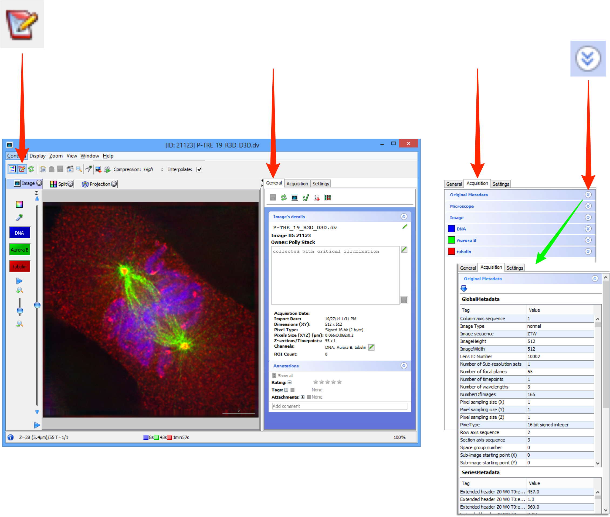

Data can be viewed in two ways using:
- the Preview pane on the right hand side panel
- or the Full Viewer
The functionality of the controls in both viewers is the same.
Select an image in the data tree or the central panel.
To view the image in the Preview pane click on the Preview tab in the right hand panel.
To view the image in the Full Viewer double-click on the image in the data tree or the thumbnail in the centre pane.
- or select the image and click on the Full Viewer button in the General or Preview panes in the right hand panel (also in the main toolbar in OMERO.insight).
Note
The functionality and way the controls behave is essentially the same in the Full Viewer and Preview pane in both clients, and between OMERO.insight and OMERO.web.

Step through any Z stack using the slider on the left side or clicking on the up or down arrows at either end.
If the image data includes a time sequence, step or play through the time sequence (T) using the controls at the bottom of the viewer window.
Click the Play arrows at the the ends of the sliders to play through the Z stack or time points.
Z and T information is displayed in the bottom left corner.
Data from JCB: Civelekoglu-Scholey et al., JCB, doi: 10.1083/jcb.200908150
In the OMERO.insight Full Viewer, click on the icon to access the rendering settings controls.
In the OMERO.web Full Viewer, click on the Edit link to open the rendering settings controls.
Click on the channel wells to toggle channels on or off.
Intensity values can be adjusted using the slider, or entered in the text boxes.
Click on the colour-picker to change the colour assigned to a channel.
Click Min/Max to reset the slider values to the darkest and brightest pixels for the image.
Click Full Range to set the range of values to the minimum and maximum range of the pixel type of the image.
These values can be over-ridden by typing in the text box.
Click Imported to return to the rendering settings at import.
Click Save to save your own rendering settings.
Selecting another user's settings, or another image, before saving your settings will lose any changes you have made.
Click Save to All to save the rendering settings to all images of the same type in the dataset.
Undo and Redo and Copy and Paste are available by keyboard shortcuts or the buttons at all times.
Depending on group permissions, other users can save their rendering settings for an image.
Click on the thumbnail to select the settings saved by a user.
The thumbnail for the currently selected settings is highlighted in blue.
The settings belonging to the image’s owner are distinguished by the blue text label.
Full Viewer
Select the tabs above the image to show a Split channel and Projection views of the image data.
In the OMERO.web viewer select either the Split Channel or the Max Intensity radio button.
OMERO.insight:
OMERO.web:

Zoom using the controls on the left side of the window.
Click on the Magnifier to view a selected area of the image in OMERO.insight.
Click on the menu in the Zoom Window to configure size of lens, zoom percentage, units and the color of the zoom box in the main image viewer.
Click on the movie player icon to play through Z-stacks and time sequences with more control in OMERO.insight.
Click on the Metadata button to open the metadata panel to the right of the image.
The General tab shows the name and description which are editable, summary data, rating, tags, attachments, comments and the location in the OMERO.server managed repository.
The Acquisition tab shows the original acquisition data imported with the image data.
